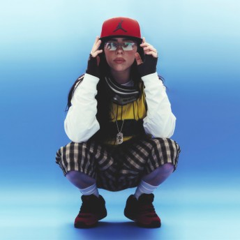
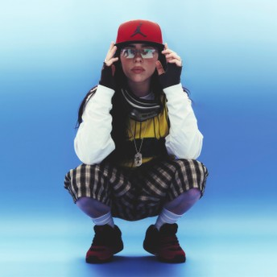

Biografía
Eilish Pirate Baird O’Connell nació el 18 de diciembre de 2001 en Los Ángeles, California, Estados Unidos. Es una cantante, compositora y productora musical reconocida internacionalmente por su estilo único, su voz suave y su personalidad artística auténtica. Actualmente tiene 23 años y continúa residiendo en California, aunque mantiene en reserva los detalles exactos de su lugar de residencia por motivos de privacidad. Sus padres son Maggie Baird y Patrick O’Connell, ambos actores y músicos, quienes influyeron en su formación artística desde muy joven. Billie tiene un hermano mayor, Finneas O’Connell, quien además de ser su hermano es su productor y colaborador más cercano. Juntos han creado casi todas sus canciones y álbumes, incluyendo los grandes éxitos que la lanzaron a la fama mundial. Eilish fue educada en casa (homeschooling), lo que le permitió desarrollar su creatividad desde pequeña. A los ocho años se unió al coro infantil de Los Ángeles (Los Angeles Children’s Chorus), donde comenzó a entrenar su voz y adquirir conocimientos musicales básicos. A los once años empezó a escribir sus propias canciones inspirada en su hermano, y en 2015 grabó “Ocean Eyes”, un tema producido por Finneas que subió a SoundCloud. La canción se volvió viral y marcó el inicio de su carrera profesional. En su vida personal, Billie Eilish es conocida por su estilo original y su compromiso con temas sociales y ambientales. Es vegana desde los 12 años, una decisión que tomó por respeto hacia los animales y el planeta. Es amante de los animales y ha tenido varias mascotas: un perro pitbull llamado Shark, adoptado en 2020; un perro mayor llamado Pepper, que falleció en 2023; y una tarántula llamada Cooli, que tuvo durante su adolescencia. Además, apoya campañas de adopción de animales y ha colaborado con refugios en distintas ocasiones. En cuanto a gustos y curiosidades, su color favorito es el amarillo, aunque a menudo se la asocia con tonos oscuros y una estética sombría. Aunque no ha revelado públicamente quién es su mejor amiga, se la ha visto acompañada de otros artistas y miembros de su equipo con quienes mantiene una relación cercana. También ha hablado abiertamente sobre su salud, revelando que padece el síndrome de Tourette, un trastorno neurológico que causa tics motores y vocales, condición que aprendió a manejar con el tiempo y de la que ha hablado con naturalidad para concientizar a sus seguidores. Hoy en día, Billie Eilish sigue siendo un ícono de autenticidad y evolución en la industria musical. A pesar de su corta edad, ha logrado romper récords, inspirar a millones de jóvenes y mantener una imagen fiel a sí misma. Su historia demuestra que la creatividad, la vulnerabilidad y la originalidad pueden ser las mayores fortalezas de un artista.
Su álbum debut "When We All Fall Asleep, Where Do We Go?" (2019) fue un éxito internacional, ganando múltiples premios Grammy. Billie es reconocida por desafiar los estándares de la industria musical con su autenticidad, creatividad y mensajes poderosos. Y también ha elaborado otros álbumes, que son: When We All Fall Asleep, Where Do We Go? — 2019, Happier Than Ever — 2021, Hit Me Hard and Soft — 2024.
Canciones más escuchadas
- Bad Guy – más de 2 mil millones de reproducciones en Spotify.
- Lovely (con Khalid)
- Happier Than Ever
- Ocean Eyes
- When the Party’s Over
- Lunch
- Wilflower
- Greatest
- Blue
- I love you
- Goodbye
Premios y Reconocimientos
Billie Eilish ha recibido numerosos premios a lo largo de su carrera, entre ellos:
- Ganó el premio Best Song Written for Visual Media por “No Time to Die” para la película de James Bond, lo cual la convirtió en la persona más joven en lograr la “triple corona” de música de cine (Oscar, Grammy, Golden Globe) a los 20 años.
- En los 81st Golden Globe Awards (2024) se alzó con el premio Best Original Song – Motion Picture por “What Was I Made For?” del filme Barbie.
- En los 2024 Academy Awards (“Oscars”), ganó el Oscar a la Mejor Canción Original por “What Was I Made For?”.
- En los 2025 American Music Awards, Billie Eilish ganó los siete premios para los que fue nominada, incluyendo “Artist of the Year”, “Album of the Year” por Hit Me Hard and Soft, y “Song of the Year” por Birds of a Feather.
- Hasta abril de 2024, se reportaba que había obtenido más de 180 premios en total (183 ganados y más de 480 nominaciones).
Fotos

 
